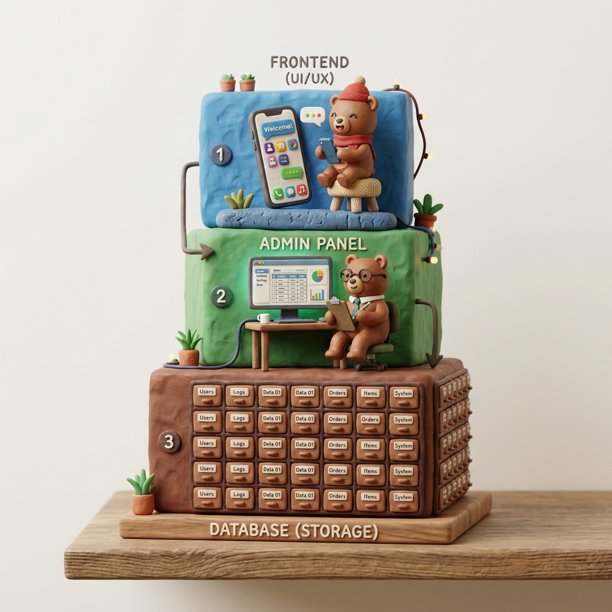

Chapter 01
第一章：走進後端的世界（診所比喻）
親愛的設計師，您可能已經學過如何設計精美的網頁介面（前端 UI），但您是否曾好奇，當用戶在介面上輸入帳號密碼、送出表單後，網頁背後到底發生了什麼事？
我們可以用一個「沒有電子化的傳統小診所」看感冒的情境，來比擬網頁與 App 的系統架構：前端掛號人員、後端行政人員與資料庫病歷櫃三者密切配合。
透過這套實體診所運作機制，我們能將抽象的網路資料流（Data Flow）轉化為直觀的操作程序，對於建構高水準的 UI/UX 原型至關重要。
前端 = 診所前台接待
負責面對病患（使用者），提供掛號。相當於網頁排版、輸入欄位與按鈕。
後端 = 前台後行政人員
在幕後工作。負責分析掛號資料、調閱指令與邏輯處理。相當於伺服器邏輯。
資料庫 = 九宮格病歷櫃
存放紙本病歷，按出生年份（88-91年）分類。行政人員負責從中精準調閱。
Chapter 02
第二章：前後端的大對接（接力賽）
那麼，前端小熊和後端小熊，在網路世界中是怎麼合作的呢？其實就像是一場完美的接力大賽！
當使用者在介面上點擊按鈕，前端小熊就拿著接力棒往前奔跑。這支接力棒不是普通木棍，而是包含了 **`010101` 等格式數據（例如 JSON 資料）**。
前端小熊把接力棒交給後端小熊（即 API 對接）。後端小熊接棒後，帶著數據進入伺服器與資料庫進行高速運算，處理完畢後，再次將結果棒子交回前端小熊，畫面上便即時渲染出最新的介面狀態。這就是前後端「對接」的運作原理！
Chapter 03
第三章：後端的運作邏輯與 Laravel 開發利器
1. 後端的大腦運作
我們前面比喻過，後端就像是一個「隱藏在幕後的行政人員」。這個人必須具備兩個核心能力：第一是「聽得懂前端遞給他的接力棒資訊」，第二是「擁有自主判斷的腦袋」，知道在什麼時間點、因為什麼邏輯，去資料庫拿取對應的資料。
當行政人員（後端）決定去病歷櫃（資料庫）拿東西時，他不能使用人類語言，而必須透過一種專門與資料庫溝通的官方語言 —— SQL 語言。而存放病歷的病歷櫃系統，最常見的名詞就叫做 MySQL。
2. 經典組合：PHP + MySQL
在大學課程中，PHP 語言搭配 MySQL 資料庫是最經典、最普及的網頁後端技術，全球高達 80% 的網頁背後都是使用這個技術。
PHP 語言的優缺點剖析：
- 優點（開發極快）：開發速度非常驚人，資源開放且完全免費，且幾乎所有伺服器都默認支援，建置極其容易。
- 缺點（高併發瓶頸）：在極端的大流量、同一瞬間有數十萬人同時點擊時，弱型別的 PHP 效能較容易遇到瓶頸。
3. 升級版包裝：Laravel 框架
雖然 PHP 很好用，但原生寫法有時比較繁瑣。因此，軟體工程師 Taylor Otwell 在 2011 年以 PHP 為基礎，封裝開發了一套強大的工具包 ── Laravel。

Taylor Otwell
Laravel 創始人
他在 2011 年釋出 Laravel，立志讓後端 PHP 開發變得優雅、快樂且安全。
MVC 架構與防範機制：讓畫面與邏輯分離，提高開發效率。
Chapter 04
第四章：支撐後端運作的舞台：作業系統三國鼎立
前端與後端的資料交換、伺服器的代碼運算，這一切神奇的事情都無法在虛空中發生。它們需要一台實體或虛擬的電腦，而這台電腦必須安裝 作業系統 (Operating System, OS) 才能運作。
快轉到 1990 年代至今，整個電腦與伺服器世界基本上就是由三個最著名的核心系統所主宰，形成了經典的「三國鼎立」局面：
Windows
佔據桌面約 70% 市佔率，大眾最為熟悉，軟體支援最廣泛，但商業授權昂貴。
macOS
與蘋果高質感硬體裝置強烈綁定。是許多 UI/UX 設計師的愛用系統，介面精美。
Linux
開源免費。主要採用輕量化「內核」架構，是後端主機絕對的無冕之王。
為什麼後端伺服器都是 Linux 的天下？
雖然我們在個人電腦上很少看到 Linux，但在雲端運算與後端伺服器上，Linux 佔據了近乎 90% 的市場，原因在於：
1. 堅如磐石的超強穩定性 (Stability)
Linux 的設計允許它連續運行數年而不需要重啟，不會像 Windows 那樣經常因為更新、軟體崩潰或內存洩漏而藍屏死機。
2. 極致輕量化與按需載入 (Lightweight)
Linux 是高度模組化的，只加載系統運作絕對必需的組件（內核）。例如：如果您只需要伺服器執行 3 個特定套件，Linux 就只會消耗對應的微小記憶體。
Chapter 05
第五章：後台與後端的本質區別
在討論系統開發時，我們常聽到「後台 (Admin Panel)」與「後端 (Back-end)」。這兩者之所以在系統架構中必須做出明確的**權限分割 (Role Segregation)**，核心原因在於「資訊安全 (Security)」。
我們不可能、也不可以讓一般的使用者去任意查看或修改資料庫中的所有原始數據。因此，我們必須將「使用者」與「管理人員」的操作環境進行物理性與邏輯上的分割：
分層權限架構：
- 第一層 (一般端 App)：一般使用者操作的介面（A 區塊），安全受限，僅能看到與修改自身被允許的資料。
- 第二層 (後台 Admin Panel)：專屬管理者操作的介面（B 區塊），能夠透過後端邏輯與資料庫進行深度但受監管的安全溝通。

圖 5.1：前端/App 介面、後台管理介面與資料庫底層權限關係
第二層：後台管理介面 (Admin Panel)
供擁有特定權限的管理員、客服操作的圖形介面，具備人性化操作與防錯防欄機制。
🛡️ 心靈機器人後台控制板 (Admin Dashboard)
正常
第三層：資料庫管理層 (Database)
底層原始資料庫儲存庫。在這裡直接更動資料是極其危險且不可逆的。
| id |
name |
birth_year |
emotion_status |
| 1 |
小美 |
民國 88 年 |
Joyful |
| 2 |
大雄 |
民國 89 年 |
Anxious |
| 3 |
阿華 |
民國 91 年 |
Depressed |
即堂隨測
關於「後台 (Admin Panel)」與「資料庫 (Database)」的敘述，下列何者正確？
Chapter 06
第六章：深入探討資料庫與資料表
1. 資料庫 (Database) 與資料表 (Data Table)
我們延續第一章「小診所病歷櫃」的比喻。資料庫 (Database) 本質上指的就是「整座病歷櫃」或「存放病歷櫃的房間」本身。
而資料表 (Data Table)，則是櫃子裡「一格一格抽屜」或者「一疊疊依年份標記的病歷資料夾」。例如，我們的病歷櫃（資料庫）中，有專門放小孩子資料的「兒童病歷表」、放藥物庫存的「藥品表」，這每一個分類就是一張「資料表」。
在實務中，資料庫櫃子有很多種類型，像是鐵櫃、木櫃或塑膠櫃。同樣地，軟體界也有多種資料庫系統，而 MySQL 就是其中一種最老牌、最容易上手且全球廣泛使用的「資料庫櫃子」。
2. 關係型資料庫的比喻（關係連動）
MySQL 屬於關係型資料庫 (Relational Database)。什麼是關係呢？我們可以用「父母與孩子」的關係來解釋：
一對多 (1-to-Many) 關係比喻：
「一個父母（1）可以擁有好幾個孩子（Many），但是一個孩子在法律血緣上只會對應到一組父母（1）。」
在資料庫中也是如此：例如「一位使用者」可以擁有「很多筆心理狀態記錄」，但這每一筆記錄都只屬於「該名特定的使用者」。資料表就是透過這種「關係 (Relationships)」互相連動對接的。
3. 它本質上就像 Excel 表格
別把資料庫想得太難，在概念上它其實非常像我們常用的 Excel 表格 ── 都有著橫列 (Rows) 與直欄 (Columns) 結構。
不過，因為直接用黑白指令碼操作資料庫容易打錯字，工程師開發了名為 phpMyAdmin 的圖形化網頁介面。它就像是網頁版的 Excel，讓設計師和開發者可以直接在瀏覽器上點擊、瀏覽與修改 MySQL 資料庫裡面的資料表。
phpMyAdmin 4.9 (localhost)
Database: clinic_db
Tables (資料表)
patients
doctors
medicines
🔍 瀏覽
✏️ 結構
➕ 插入
idnamebirthcold?
1小熊88Yes
2大熊90No
即堂隨測
在我們的診所比喻中，下列哪一個選項相當於「一格一格抽屜中分類存放的病歷資料夾（資料表）」？